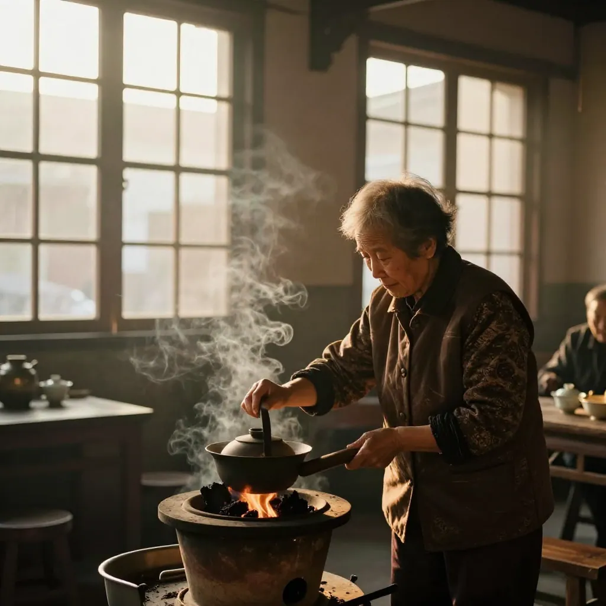

清晨第一泡：唤醒一天的蜜兰香
在惠州想喝到唤醒人的早茶？阿凤姐说，清晨六点半，第一泡蜜兰香下肚，整个人才算真正醒过来。
今朝惠州东平，天刚蒙蒙亮。东江边的路灯还没熄，东湖花园沿江那排商铺里，凤凰茶业的卷闸门「哗啦」一声先响了。阿凤姐一边挽袖子，一边把小烤炉点上——这是她的老规矩，开门先烤茶，唤醒茶叶，也唤醒人。
第一幕：晨练的人，先闻到了香
六点四十，李叔晨练回来，汗还没干，人就被香勾进了店。「凤姐，你这老远就闻到啦！今天泡的啥，这么霸道？」
阿凤姐笑：「蜜兰香，今早第一罐。晨练回来口干，第一泡最解乏。」
话音没落，隔壁买菜回来的王阿姨也拎着菜篮子探头进来：「哟，我就说这条街今早怎么这么香，敢情是你这里先醒了。」
阿凤姐赶紧招呼：「都别走，坐，第一泡马上好，喝了再回家。」
第二幕：开门这泡茶，最有讲究
别看是清晨第一泡，阿凤姐手上一点不马虎。盖碗先用开水一烫，温杯去寒气；小秤一称，9克蜜兰香，不多不少；茶叶先放小烤炉上提香5分钟，蜜薯甜香一下就被烘出来了。
「清晨茶叶也跟人一样，刚睡醒，要先活动活动。」阿凤姐一边说，一边100度开水高冲入盖碗，茶叶在水里打着转，第一泡洗茶倒掉，香气粉粉地往外散，整个小店瞬间暖了起来。
第三幕：第一口下去，眼睛都亮了
第二泡出汤，茶汤透亮，跟琥珀似的。阿凤姐先把公道杯递过去：「先闻，再喝。」
李叔深吸一口：「哎哟，这蜜香味，跟番薯糖水似的！」一口下去，从舌尖甜到喉咙，晨练那点乏一下就散了。
王阿姨不懂啥大道理，就一句实在话：「喝完嘴里还有味，舒服，胃里暖暖的。」
阿凤姐笑着点头：「好茶精华在第4、5泡，能泡十二三泡呢。早上泡这一道，能喝到八九点。我用的还是凤凰山带回来的山泉水，软水泡，香才扬得起来，硬水一泡，香就锁住了。」
第四幕：酒楼陈老板的早茶经
说到早茶，就不得不提陈老板。他在河南岸开酒楼，早茶档一天翻三轮，以前用的是普通乌龙，客人喝完没印象。去年跟着阿凤姐拿了三十斤蜜兰香试水，定价18到22块一泡，毛利比卖豆浆油条还稳。
前两天陈老板还专程过来补货，说：「凤姐你这茶邪门，客人早上喝了，下午还打电话问哪买的。我现在早茶档都不用推销，香味自己会留客。」
李叔一听乐了：「那我晨练队那帮老伙计，以后早茶有着落了。」阿凤姐接话：「批发这东西，就是这样，好货让下游也敢拍胸脯。你好卖，我才好供，长长久久。」
尾声
七点半，太阳跳出东江面，金光铺进店里。李叔喝完三杯，拎着鸟笼心满意足走了；王阿姨临走还打包了二两，说回去给老伴也醒醒盹。阿凤姐把盖碗一收，又续上水——她知道，Match晨曦这壶茶，暖的不只是胃，是整条街的人情味。
不过啊，陈老板昨天悄悄跟她说，他还想搞个「清晨冷泡」给年轻人带路上喝，阿凤姐听完眼睛一亮……
FAQ
Q：在惠州早上喝什么单丛最提神？
A：蜜兰香最合适，高香型，一冲下去蜜薯香满屋，100度高冲，6秒出汤，喝完通透醒神，比浓咖啡还舒坦，还不伤胃。
Q：清晨第一泡和平时泡有啥不一样？
A：记住三点：温杯要透，茶要提香5分钟，第一泡一定要洗茶。早上人刚醒，茶也要「醒一醒」，香气才出得正。
Q：酒楼早茶档拿货怎么拿划算？
A：像陈老板那样，先拿几斤试水土，客人认了再按三十斤走。蜜兰香耐泡，一泡能冲十几道，算下来一杯成本才一块多，复购率最高。
标签
#凤凰单丛 #蜜兰香 #惠州早茶 #潮州凤凰山 #清晨第一泡 #惠州凤凰茶业
联系方式
📍 惠州市惠城区东湖花园一区沿江商铺89-136（凤凰茶业）
📱 电话：13435567385
🌐 网站：https://afeng-tea.vercel.app/
营业时间：每天 09:00 - 21:00（清晨老茶客可提前约茶）
下回再说说「陈老板的冷泡实验和年轻人那杯路上的茶」的故事，敬请期待。